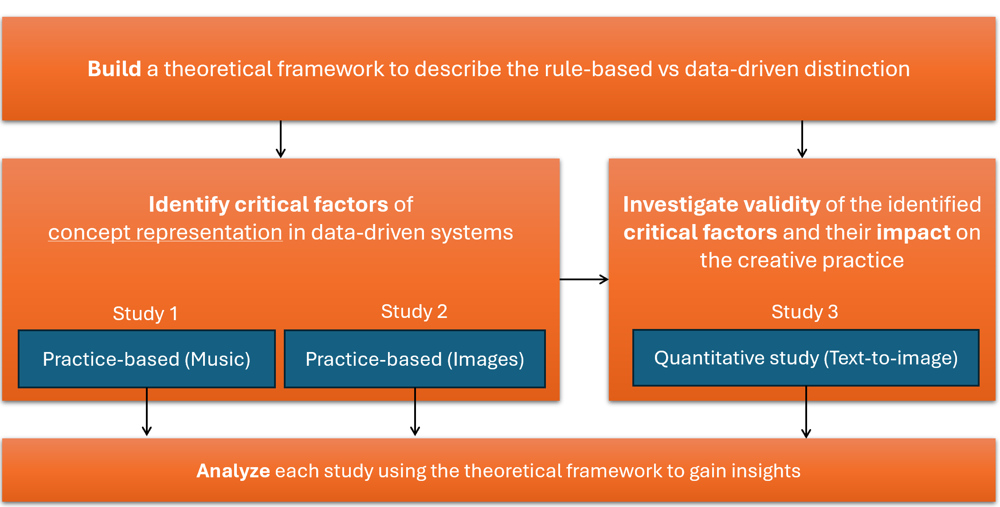

Two things should be evident at this point. First, that there is a fundamental distinction between the rule-based and the data-driven approach, and that this distinction is grounded in the different TOCs that they subscribe to. Second, that there is a growing trend shifting the attention towards data-driven technologies. This chapter presents the methodology (see Figure 3.1) and the theoretical framework used in this thesis to investigate the impact of this trend on the creative process.
To understand the impact of the current data-driven trend on the creative process, this research starts by establishing a theoretical framework capable of addressing the distinction, within the context of the creative process. The next step is to identify critical factors of concept representation in data-driven technologies. This is accomplished in the first and second study using qualitative research. The identified critical factors are then investigated in the third study through quantitative methods. The theoretical framework is also used to analyze each study and gain further insights.

The methodology employed in this doctoral thesis is firmly grounded in post-phenomenology, a philosophy of technology that understands technologies in light of how they mediate human-world relations by co-constituting the subjectivity and objectivity of experience (Rosenberger and Verbeek 2015). As discussed in the previous chapter, addressing computational creativity under this perspective proves valuable, as it offers a robust framework for analyzing and interpreting the intricate relationships between technology, human experience, and the social context. Moreover, it can accommodate a wide variety of possible relations between humans, technology, and the creative process.
In this section, the application of mediation theory is explored as a means to provide a comprehensive understanding of both the GOFAI-CT (Good Old-Fashioned Artificial Intelligence and Classical Theory) paradigm and the PT-DL (Prototype Theory and Deep Learning) approach. Mediation theory, as proposed by (Ihde 1990), offers a systematic framework to analyze the interaction between human cognition, technology, and the world, making it a suitable lens through which to examine these two distinct paradigms in the field of artificial intelligence and cognitive science. Ihde’s schematization of mediation can be summarized as follows:
Unmediated perception: I—World
Mediated perception: I—Technology—World
He provides an account of four fundamental types of relations in which humans, technology and the world stand in specific relation to one another, summarized in Table [tab:mediation]. In embodiment relations, technologies unite with a person and point their unity outward at the outside world. For example, we talk on the phone with other people rather than to the phone itself, and we view objects through a microscope rather than at it. As defined by Ihde, hermeneutic relations are those in which people interpret how technologies reflect the world, such as an MRI scan that depicts brain activity or a metal detector’s beeping that denotes the presence of metal. In this situation, technology unites with the environment rather than the person using it. People are drawn to the ways that technology depicts the universe. In a third category of human-technology-world relations, which Ihde refers to as the alterity relation, people engage in technological contact with the outside world acting as a backdrop. Instances include interacting with robots, withdrawing cash from an ATM, and using machinery. In actuality, one of the major areas of interaction design can be seen as this relationship. Fourth, Ihde makes a distinction between the background connection and how technologies frame human experiences and behaviors. In each of these instances, technology is a context for human existence rather than being directly experienced by the user. The sounds of air conditioners and refrigerators, the cool air from heating systems, the warm air from heating installations, the notification sounds from cellphones during a conversation.
p |p |p |p Name & Form & Definition &
Examples
Mediated
Embodied & (I — T) → W & Broaden the area of sensitivity of our
bodies to the world & Glasses, a dental probe, a paintbrush
Mediated
Hermeneutic & I → (T — W) & Provide a representation of the
world that we need to interpret & Thermometer, watch
Alterity & I → T (— W) & Humans are related to or with
technology as a quasi-other & ATM, robots
Background & I (— T / W) & Shapes the context of our experience
in a way that is not consciously experienced & Refrigerators,
central heating system
The theory also comes with notation system defined as follows:
simple connections between entities
interpretation of one by the other
being experienced together
being in the background of another entity
being already contextualized in some way before being processed
As a starting point, a possible formulation of the embodied relations examples introduced in the previous chapter could be:
(I — Pencil) → Drawing
(I — Door Handle) → Door
Such relations describe the tools used as being ready-at-hand, as if they are becoming a direct extension of our bodies. Through this symbiosis between the human and the non-human we can act on the world and realize the potential of the object of our attention (Drawing and Door).
When observing a human interaction with a computer or a plotter under the mediation theory lens, we could describe it as an alterity relation:
I → Computer (— Result)
I → Plotter (— Printed Design)
In alterity relations, human attention is directed towards the tool itself, as we need to interpret (→) its interface to obtain the desired output. These relationships could be expanded further, taking into consideration that alterity relations require the technology to exhibit some form of autonomy, or else there is no possibility of interaction with a quasi-other. In literature, this idea has been discussed in various forms by different authors. (Eede 2010) provides an overview of the different notions of transparency and opacity, as discussed in various strands of post-phenomenology.
Discussing Ihde, the author suggests that . Eede (2010) continues: . This technological opacity is effectively overlapping with the idea of autonomy in the sense that if a technology is experienced as a quasi-other then the human does not need to see through it. Furthermore, . By looking at what is acting in the background of alterity relations we can gain a more detailed understanding of how the technology interprets human behavior. Here is a potential expansion:
I → Computer / (CPU → [Computation]) (— Result)
I → Plotter / (PlotterSoftware → [Design]) (— Printed Design)
For example, when we ask a Computer to calculate 5 + 8, the symbols have to first be translated into the corresponding operations that are needed for the CPU to produce the result. This involves transforming symbols representing decimal numbers into byte values, allocating memory to store the result and possibly many other tasks that are not evident to the human which could be considered as acting in the background (hence the / symbol). The operator [] (contextualization) in this case effectively coincides with the programming language interface used to express the computation. This hidden abstract layer between the computer and the human is what enables the entire system to produce the result.
In a similar way when we try to describe a DL-PT typical interaction this expansion may look like this:
I → GPT / (Model → [Language]) (— Response)
I → Stable Diffusion / (CLIP → [Image Description]) (— Generated Image)
In the case of a language model such as GPT, the interface is simply natural language, which is interpreted by the model. Similarly for large diffusion models in a text-to-image pipeline, CLIP first translates the description into a latent space vector which then is used to guide the diffusion. What does the operator [] stand for in this case? It seems that this step is where the difference in the two approaches to computation lies. Instead of interpreters and compilers that translate the programs into machine instructions, this step in neural networks is governed by statistical inference, which requires prior data (i.e. the model weights). Referring back to Kant’s distinction discussed in Section [sec:the-problem-of-analyticity], it could be argued that, under the GOFAI paradigm, a machine uses formal logic, rules, and symbols to return logical conclusions to our questions based on some initial definition: . This contrasts with the deep learning data-driven approach, which relies on statistical models and data to make predictions, in a loose sense learning from experience1. Probabilistic models typically represent information extracted during training as vectors in a high dimensional space and operate through inference: .
This thesis explores the hypothesis that the two computational approaches play a role in the technological mediation. To formalize this distinction, I introduce a new notation to describe these two modalities of information processing:
R[...] for rule-based (GOFAI-CT analytic) context and
D[...] for data-driven (DL-PT synthetic) context
So we can now express all of the above without confusion:
I → Computer / (CPU → R[Computation]) (— Result)
I → Plotter / (PlotterSoftware → R[Program]) (— Printed Design)
I → ChatGPT / (Model → D[Question]) (— Answer)
I → Stable Diffusion / (CLIP → D[Image Description]) (— Generated Image)
In prior studies addressing this matter, (Benjamin et al. 2021) put forward an extension of the post-phenomenological approach to characterizing machine learning, inspired by Heidegger, (Ihde 1990), and (Rosenberger and Verbeek 2015). They suggest that, compared to other forms of technological mediation, ML embeds an interpretation of the world within the context of data. For example, the original version of CLIP has been trained on . As a result, the alignment between image and text produced by that version is dependent on how the dataset is constructed and what it contains. If there are no examples in Chinese, then D[Chinese] would simply silently, in the sense that it would still generate an image, but the output will be poorly aligned with the input prompt, as the system cannot make a well-informed guess.
Building upon the previous examples, it is possible to identify two distinct archetypes of technological mediation that broadly correspond to the two computing paradigms under investigation:
GOFAI: Human → Technology / (Program → R[Input]) (— Output)
DL: Human → Technology / (Model → D[Input]) (— Output)
This distinction and its notation shall serve in the coming chapters to discuss how the two forms of contextualization affect the creative process. To understand how these operators influence the technological mediation, it is essential to see through an alterity relation’s opacity and identify the nature of the contextualization (i.e., asking: R[] or D[]?). For example, naive users may struggle to differentiate or see through the technological opacity of DL tools due to their novelty and inherent non-logical nature.
Because this thesis is particularly concerned with the impact of these two types of technologies on the creative process, mediation theory is not sufficient to describe the entire picture. Addressing this challenge, the examination of various creativity theories and their integration with mediation theory can provide valuable insights into the roles of R[] and D[] within the creative process. The following section will present different theories of creativity and extend the theoretical framework just established, so that it can more accurately and fruitfully describe the technological mediation that is typical of the creative process.
As highlighted in the literature review of CC, the community has explored and analyzed various ways to frame creativity. On one hand, some authors have discussed creativity as a non-anthropocentric idealized process, such as search or formal combination making (Wiggins 2006a; Hoorn 2014; Besold 2017), while others have focused on the interaction between human and non-human elements, addressing topics such as co-creation and evaluation (Saunders 2012; Jordanous 2012; Davis 2016; Kantosalo 2019). Many of these authors refer to well-known creativity theories in their arguments, attempting to re-contextualize them for non-human creativity. For this doctoral thesis, it is crucial not only to mention these foundational theories but also to connect them with the post-phenomenological interpretation of technology. The following sections will discuss three theories to establish a foundational layer for the studies presented in the subsequent chapters. Although these three theories represent only a limited subset of the available theories, they offer a well-rounded overview of how creativity has been conceptualized by recognized experts in the field.
According to (Rhodes 1961), there are four perspectives on creativity: the person, the process, the product, and the press. When Rhodes talks about perspective in the context of creativity, he means a way of looking at or understanding creativity. The four perspectives that Rhodes identifies each emphasize different aspects of creativity and provide unique insights into how it works. By considering all four perspectives together, researchers and practitioners can develop a more nuanced understanding of what drives creative thinking and how it can be fostered in individuals, communities and organizations. I present below a non-exhaustive list of authors and theories addressing each perspective. It is rare for an author to discuss only one perspective, in fact most of the researchers mentioned below developed comprehensive theories which cover more than one. The purpose of this list is to identify each perspective and its scope, rather than give a full account of each author’s theory.
The person perspective focuses on the individual characteristics, traits, and abilities that contribute to creativity. This perspective emphasizes the importance of personality traits, such as openness to experience, and cognitive abilities, such as divergent thinking, in fostering creativity.
Some examples of authors and their theories addressing this perspective:
Mihaly Csikszentmihalyi: Csikszentmihalyi is a psychology professor who has written extensively about creativity and its relationship to personality traits. He suggests that individuals with certain personality characteristics, such as openness to experience and non-conformity, are more likely to be creative than others (Csikszentmihalyi 1990, 1996).
Teresa Amabile: Amabile is a professor at Harvard Business School who has conducted extensive research on creativity in the workplace. She argues that intrinsic motivation plays an important role in fostering creativity, and that individuals who feel passionate about their work are more likely to generate creative ideas (Amabile 1997).
Dean Keith Simonton: Simonton is a psychology professor who has studied the relationship between intelligence and creativity. He suggests that while high intelligence is necessary for creative thinking, it may not be sufficient on its own; other personal factors, such as openness to experience and perseverance, also play an important role (Simonton 1985; Simonton 1994, 1999).
The process perspective focuses on the steps and stages involved in creative thinking and problem-solving. This perspective emphasizes the importance of various cognitive processes, such as incubation and insight, in the creative process.
Some examples of authors and their theories addressing this perspective:
Graham Wallas: Wallas was an early theorist of the creative process and his book ((1926)), is considered a classic in the field. He proposed that there are four stages to the creative process: preparation, incubation, illumination, and verification.
Robert Sternberg: Sternberg is a psychologist who has studied creativity extensively throughout his career. He has proposed a number of models of the creative process over time; one influential model suggests that there are six stages to creative thinking: problem-finding, problem-definition, idea generation (using divergent thinking), idea evaluation (using convergent thinking), implementation planning and taking action (Sternberg 1988, 2003).
Mihaly Csikszentmihalyi: Csikszentmihalyi’s work on flow also encompasses aspects of the creative process; he suggests that individuals often experience flow states during periods of intense focus on a task or problem-solving challenge (Csikszentmihalyi 1990).
The product perspective focuses on the creative output or outcome of the creative process. This perspective emphasizes the importance of evaluating the quality and originality of the creative product. Some examples of authors that have discussed this perspective in depth within their theories.
Mark A Runco: Runco’s research on creativity includes work on evaluating creative products across domains such as science, art and literature. Runco has developed several measures for assessing creativity in various domains, such as science, art, and literature. These measures are designed to evaluate products based on their originality, fluency (i.e., the number of ideas generated), flexibility (i.e., the range or diversity of ideas generated), and elaboration (i.e., how much detail or complexity is present). Runco’s work also emphasizes the importance of using expert judges to evaluate creative works. He suggests that experts can provide valuable feedback on the quality and originality of creative products, and that their judgments are often more reliable than those made by non-experts (Runco 2014).
James C Kaufman: Kaufman is another well-known researcher in the field of creativity who has studied the evaluation of creative products across domains including visual arts, music, writing and humor. One area of his research that is particularly noteworthy is his focus on identifying specific characteristics of creative products that can be used to assess their quality and originality. For example, he has identified a number of features that are common across highly-rated paintings such as harmony and complexity. Kaufman has also developed several measures for assessing creativity in different domains. These measures are designed to evaluate creative products based on criteria such as novelty, appropriateness and value (Kaufman and Sternberg 2019; Kaufman 2016).
The press perspective focuses on the environmental factors that influence creativity. This perspective emphasizes the importance of social and cultural factors, such as organizational climate and societal norms, in fostering creativity.
Keith Sawyer: Sawyer is a psychologist who has studied the role of collaboration and group dynamics in fostering creativity. He argues that social factors, such as trust and communication, can play an important role in promoting creative thinking (Sawyer 2017).
James C. Kaufman: Kaufman also studied cultural influences on creativity around the world. His research on this aspect of creativity suggests that different cultural values and norms can either encourage or discourage creative thinking, depending on how they prioritize individualism versus collectivism (Kaufman and Sternberg 2019).
Teresa M. Amabile: Amabile has also written extensively about the social and organizational factors that can influence creativity. Her research emphasizes the importance of providing individuals with autonomy, resources, and support in order to foster creative thinking (Amabile 1996). Furthermore, in their book ((2014)) Amabile and Kramer describe how organizational factors like positive feedback, social support, and meaningful work help people stay motivated and engaged in creative work.
Richard Florida: Richard Florida is a well-known urbanist and social scientist who has studied the role of creativity in economic development. His work focuses on how cities can attract and retain creative class professionals, such as artists, designers, and tech workers. Florida’s research emphasizes the importance of creating environments that are conducive to creativity. He argues that cities that offer a high quality of life (e.g., good schools, affordable housing, access to cultural amenities) are more likely to attract creative professionals than those that do not. He also suggests that cities with strong social networks and diverse populations are more likely to foster innovation and creativity (Florida 2014).
Margaret Boden is a renowned cognitive scientist and philosopher who has extensively studied creativity. According to her theory of creativity, there are three types of creativity: combinatorial, exploratory, and transformational (Boden 1996, 2003).
Combinatorial Creativity: This type of creativity involves taking existing elements, concepts, or ideas and combining them in a novel way to create something new. Combinatorial creativity is often seen in fields like art, music, and literature where artists or creators take inspiration from previous works but add their own unique twist to it by mixing elements from different styles or genres. Analogies and metaphors also included in this category, for example, Niel Bohr’s model of the atom borrows the idea of the solar system to describe how electrons revolve around the nucleus.
Exploratory Creativity: This type of creativity involves exploring a conceptual space working within accepted rules of procedure looking for something that no one else has discovered before (Miller 2019). Exploratory creativity is often seen in scientific research or technological innovation where researchers push the limits of what we know by experimenting with new ideas and theories. For example, when Marie Curie discovered radium she was exploring an area that had not yet been fully understood by science.
Transformational Creativity: This type of creativity involves fundamentally changing how we view or understand something. Transformational creativity often arises from challenging existing assumptions or paradigms and proposing a radically different perspective on a subject matter. For example, when Einstein developed his theory of relativity, he transformed our understanding of space and time, challenging the long-held assumptions of Newtonian physics.
It is important to note that these types of creativity can also overlap or intertwine with one another. For example, a scientist may use combinatorial creativity when combining existing theories to form a new hypothesis before exploring it further with exploratory creativity. Similarly, an artist may achieve transformational creativity by challenging established artistic norms and then use combinatorial creativity to create something novel within this new framework.
Boden’s taxonomy is a recurring theme in creativity research, it is hard to find books or articles that do not mention it, for better or for worse. Among the critics, (Hoorn 2023) challenges Boden’s (and many before her) view that creativity is the . Hoorn argues with regards to combinatorial creativity: . This echoes what has already been discussed in Section 2.2.8 about the notions such as novelty and value: these criteria are dependent on the audience of reference and, more in general, the context. To sidestep these and other issues, Hoorn promotes a model of creativity that is non-anthropocentric and modular.
Hoorn’s ACASIA model of the creativity described in his book ((2014)) is a relatively new theory attempting to describe the creative process as a set of six different components. These modules may be described as follows:
Association: This module refers to the capacity to generate images, words, meanings, and other semantically related features in response to a stimulus or entity. It involves connecting different ideas or concepts that are related in some way.
Combination: This module involves establishing connections between associations of disparate entities by matching their (fuzzy) feature sets and measuring perceived similarity and dissimilarity. It is the process of combining different ideas or concepts into something new.
Abstraction: This module involves bringing certain phenomena onto a conceptual level where connections can actually take place. At higher abstraction levels the similarity between entities is increased, thereby making new links possible.
Selection: This module involves dismissing those features that cannot be used to make the combination acceptable in the eyes of the creator or the audience, hence affecting the measure of dissimilarity between disparate entities. It means choosing which aspects of different ideas or concepts will be included in the final product.
Integration: This module involves attaching the features of one entity to another entity literally, creating a cohesive whole from disparate parts.
Adaptation: This module involves changing individual features such that the transition from one entity to another would become acceptable by optimizing the blend between them. It entails modifying certain aspects of different ideas or concepts so they fit together better in the final product.
One defining aspect of ACASIA is its modularity, which allows for flexibility in implementing all or only some of the components in a creative system. For example, a non-human agent might only generate random combinations, while humans perform the evaluation steps (Selection, Integration, Adaptation). This feature also enables the model to describe natural phenomena, such as evolution or chemistry, as creative systems within the same framework. For this reason, the ACASIA model is very well suited to compare the two forms of technological mediation discussed in Section 3.1.
To better understand the differences between R[] and D[], a comparison of these approaches in the context of the ACASIA model is presented below. Table 3.1 demonstrates how each ACASIA module might be implemented based on the two paradigms. This comparison connects existing CC literature with Hoorn’s model and the post-phenomenological interpretation, offering insight into the contrasting nature of the paradigms and their potential impact on the creative process.
| Module | Program → R[Input] | Model → D[Input] |
|---|---|---|
| Association | CT-based similarity models, such as fuzzy sets or semantic networks, typically employ search algorithms to produce meaningful associations. Weights can be adjusted according to goals and concerns, so Press elements may guide this step. | Latent space is constructed from datasets so the similarity space is predetermined during training. Associations turn out to be a reflection of the most probable associations found in the dataset, which may not be ideal for creative purposes. |
| Combination | Crisp compositional rules can produce a large number of combinations which preserve a desired structure. Rule-based systems might yield unexpected results because they are not normally influenced by typical instances. | As seen in Section [sec:the-problem-of-compositionality], compositionality is problematic when using statistical methods. However, transformers and attention can solve this issue to some degree, for example, by capturing some elements of the compositionality of language and using this latent space to condition the generation (see Section 2.2.7). |
| Abstraction | Analytical methods are already abstract. Semantic networks are typically constructed by humans, so rule-based systems can only perform second-order abstractions as instructed by the user. | Unsupervised learning architectures such as VAEs excel at abstraction (see Section 2.2.7). Latent spaces constitute an viable ground for making connections between concepts using geometrical methods in a multi-dimensional space. |
| Selection | Selection criteria may be implemented formally (e.g. Max Bense’s aesthetic principles, see Section 2.2.4) based on given properties that need to be defined objectively, which leads to issues about definitions (see Section [sec:platosproblem]). | The primary selection criteria used in DL is the optimization of a loss function, typically calculated as a distance from ground truth represented in the training dataset. This makes the selection process very efficient, but also not quite explainable, because latent space is generated during training and it is not intelligible by humans. |
| Integration | In rule-based systems a set of instructions for integration must be provided. While it can be relatively easy and efficient to provide rules for integration in a settings where the entities that need to be glued together are relatively simple, it might become an issue as complexity increases, as the number of rules might suffer from combinatorial explosion. | Integration in DL systems is performed seamlessly in latent space and the complexity it can handle depends on the size of the model (number of dimensions of the latent space). Attention algorithms can capture integration strategies that are typical in the training data. |
| Adaptation | Rule-based systems might employ fuzzy sets or other forms of graded adaptation to gain optimal similarity. | Generative DL models are naturally adaptive as they rely on one or more loss function(s) that can guide the adaptation process during inference in a 0-shot learning scenario. For example, LDMs like Stable Diffusion can do this out-of-the-box. |
These theoretical considerations will be expanded more in detail with examples in each of the three studies presented in the coming chapters. It is important to note that not all of these modules need to be automated in the creative process. In fact, none of the studies address a fully automated system that performs all of these functions. In each study there are shared responsibilities between the algorithms, the users and myself in the role of researcher and practitioner in support of the users. The exploratory scenarios presented next can be considered as multi-agent systems combining humans and non-humans, where each of the entities might be in charge of one or more of these modules. Because my role as technical expert in the studies does also occasionally overlap with the my role as researcher, it is important to frame the methodology of this doctoral thesis within the larger picture of practitioner research.
As it should be evident from the literature review, computational creativity is a rapidly evolving field that encompasses various disciplines, including artificial intelligence, cognitive science, and the arts. Given its dynamic nature, traditional research methodologies may not be sufficient to capture the nuances and complexities of this field. As already noted by Doorst over a decade ago, Practitioner Research (PR), a form of insider research, has emerged as a valid methodology of inquiry due to its ability to blend theory and practice, allowing for a more nuanced understanding of the field (Candy 2011). This section argues that PR is a valuable approach to studying computational creativity, given the fast pace of development in this field.
PR is particularly relevant in computational creativity due to its emphasis on self-reflection. Through self-reflection in the form of rigorous doubt about one’s own way of practicing, it is possible to gain new insights and experiment with new ideas in a short cycle. The role of analytical thinking in this dynamic is to maintain coherence and crystallize theories, while practice enables the exploration of new conceptual spaces. PR allows practitioners to engage in critical self-reflection, examining their assumptions and biases and seeking to improve their practice through continuous reflection and experimentation.
In , Ken Friedman ((2003)) delves into the significance of practice-based research in design and its connection to theory construction. Friedman posits that design is an interdisciplinary field that intersects with various domains, including natural sciences, humanities, social and behavioral sciences, human professions and services, creative and applied arts, and technology and engineering. This interdisciplinary nature of design highlights the importance of practice-based research, as it enables designers to apply knowledge from different fields to solve specific design problems. Friedman ((2003)) explains that practice-based research involves solving problems, creating new things, or transforming less desirable situations into preferred ones. However, understanding how things work and why requires analysis and explanation, which is the purpose of theory. Theory construction is crucial in design research as it provides a framework for understanding and interpreting design phenomena.
While practice-based research is essential in design, Friedman ((2003)) argues that it is not enough on its own to develop theory. He explains that
instead of developing theory from practice through articulation and inductive inquiry, some designers simply argue that practice is research and practice-based research is, in itself, a form of theory construction
However, the author contends that this approach is insufficient as it fails to account for the critical inquiry and reflective insight necessary for theory construction. He emphasizes that . Therefore, to reach from doing to knowing requires the articulation and critical inquiry that leads a practitioner to reflective insight.
Reflective insight is the ability to critically examine one’s own experiences, assumptions, and beliefs. It involves a deep understanding of one’s own practice and the ability to articulate that understanding to others. Reflective insight is crucial in theory construction as it enables designers to identify patterns, make connections, and develop frameworks for understanding design phenomena. Friedman’s view on the necessity of self-reflection in practice-based research is rooted in the idea that such research involves a deep engagement with one’s own professional practice. According to Candy, . Reflective practice, as defined by Schön, involves an individual’s reflection on his or her own professional practice, rather than broader situations.
In particular, practice-led research is a form of PR that focuses on the nature of practice and leads to new knowledge with operational significance for that practice (Candy 2006, 1). This type of research includes practice as an integral part of its method and often falls within the general area of action research (Candy 2006, 19). It is essential to distinguish practice-led research from practice-based research, which emphasizes the use of creative artifacts as the basis of contribution to knowledge. In contrast, practice-led research results may be fully described in text form without the inclusion of a creative work (Candy 2006, 1).
The methodology of practice-led research involves using practice as an integral part of the research method (Candy 2006, 19). Practice-based researchers should devise a clear set of methods and techniques for collecting and analyzing data (Candy 2006, 19). The personal process is a crucial element of practice-led research, and data collected should include initial starting points or motivation for the project or work, prior models or theories about how to create, perform or realize a creative artifact, time frame for the work or works to be created, role of the creative artifact in the creative process, environments and tools required to achieve the output, information to be gathered about the thinking, methods, tools, resources, support, collaboration, methods for collecting and collating data gathered, methods for analyzing collated data, expected outcomes of the research process, and the relationship of the practice outcomes to the argument of the thesis (Candy 2006, 19).
The studies presented in the next three chapters all focus on observing interactions between people and technology in the context of various creative endeavors. The first two studies (Chapters 4 and 5) were conducted within the PR framework and address exploratory practices in the field of DL as a context for self-reflection. Both studies closely examine the interactions that emerge from the encounter between an expert in the field and data-driven technology. My role as a practitioner in both these studies was to provide technical solutions in response to the expert’s needs. The third study (Chapter 6), however, adopts a more traditional approach, addressing the interactions of a larger group of participants and their behavior through quantitative measures. My active role in the third study is minimal and essentially limited to managing the platform where interactions take place.
Due to the inherently exploratory nature of these studies, my role as a researcher has been in constant evolution. The field of ML/DL is experiencing rapid growth in the number of tools and solutions available, making it a rather challenging task to stay up to date with the forefront of research and development. During interactions with experts, my contribution (and bias) primarily consisted of assessing their needs and crafting a viable solution to achieve the desired output. One of the main difficulties in this process was establishing a common language to present and explain the technology. This challenge was not surprising, as the technological opacity of computational creativity tools, particularly those based on DL, conceals the inner functional elements, making it harder for people without a technical background to understand why the system behaves the way it does.
Moreover, all three studies come with the unavoidable drawback of being immediately outdated, somewhat ephemeral, context-dependent, and highly subjective in nature, given that the environment is in constant flux. There is simply not enough time to prepare a well-structured experiment with tested protocols because, within a month or two, everything can change quite radically. For example, in the summer of 2022, generating an image from a text prompt required 1-3 minutes. It was simply impossible to observe a group of individuals using text-to-image technology in a creative setting, considering budget constraints and time limitations. Back then, only evaluating pre-generated images seemed like a possible strategy to understand the impact of this type of tool. As Stable Diffusion was released in August 2022, from one day to the next, it became possible to generate an image in approximately 4 seconds. This improvement opened up the possibility of running workshops with 20-30 people generating images as an iterative process, producing hundreds of images within a couple of hours.
For this reason, the studies are not particularly concerned with the specific technology being used, but rather with the broader implications of data-driven technologies for creativity and human-technology interaction. These studies are designed to contribute to the construction of a theory that describes how data-driven technologies differ from the rule-based technologies that we are accustomed to interact with. By examining the interactions between people and technology in creative contexts, these studies aim to shed light on the unique characteristics of data-driven technologies and their potential impact on creative practices. The theory that emerges from these studies aims to provide a framework for understanding and interpreting the phenomena associated with data-driven technologies in creativity, taking into account the nuances and complexities of this rapidly evolving field.
My interest in making music has been to create something that does not exist that I would like to listen to. I wanted to hear music that had not yet happened, by putting together things that suggested a new thing which did not yet exist.
It would be controversial to claim that machines experience anything at all. (Colton et al. 2020) provides an interesting perspective on this particular issue, yet this is beyond the scope of this section. The term experience is only used as an analogy to facilitate the reader in understanding the different approaches that GOFAI and DL are bound to.↩︎